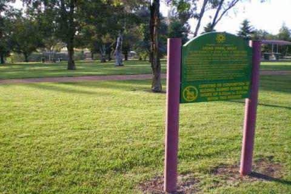
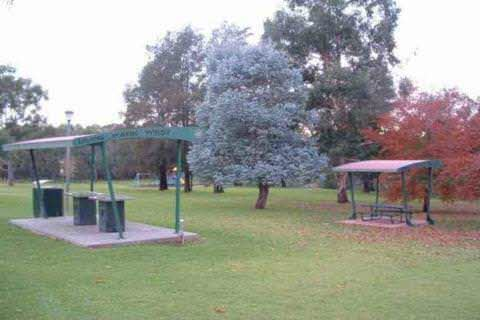
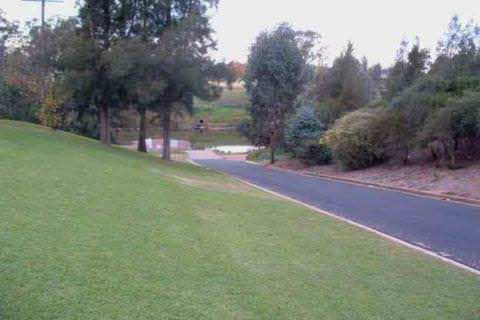

PHONE
PHONE GET DIRECTIONS
GET DIRECTIONS-

- 
- 
- 
-

COORDINATES: 32º14'57.20"S, 148º35'41.61"E
LOCATION: Opposite Riverbank Park - which runs parallel to Macquarie Street, the main street of Dubbo. The boat ramp lies more or less under the main (L H Ford) bridge crossing the Macquarie. Look for the Tallarook Motel right near the round-about beside the bridge - the park is right in front of it. Alternatively, take Stonehaven Crecent off the Newell Highway - which runs between the Council Caravan Park and the Cattlemen's Motel - opposite fast food alley!